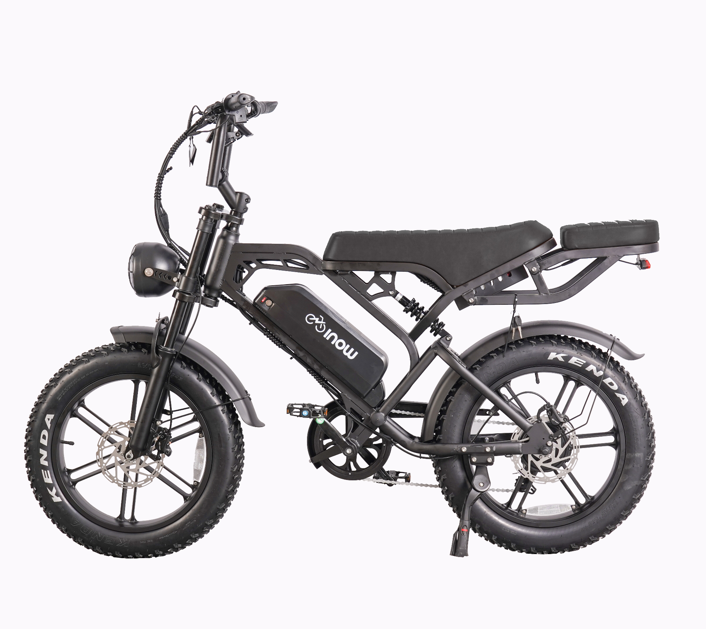

Rodas com referência dimensional · estudo pelas fotos

Referências documentadas para os componentes. A réplica completa ainda não tem dimensões certificadas pela INOW.
Kenda Krusade Sport 20 × 4.00, ETRTO 98–406. As fotos mostram Kenda/Krusade; o código exato do pneu ainda precisa ser conferido na loja. O diâmetro externo do pneu e o perfil do aro são estimados.
164 × 68 × 115 cm no manual da BK‑V20 Pro de 750 W, página 7, distribuído pela Neon Mobilidade. A equivalência com a Brake Pro fotografada não foi confirmada. Medidas de embalagem não foram usadas.
Aguardando carregamento do modelo…
Não usar essas dimensões como ficha técnica. Entre-eixos, banco, bateria, quadro e suspensão ainda dependem de medição do exemplar ou desenho do fabricante.